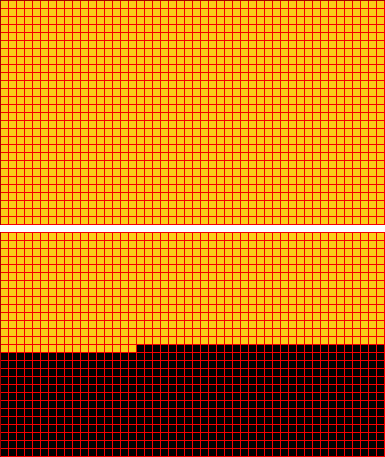
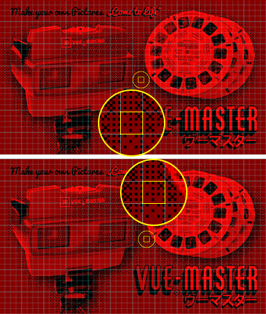

VUE-MASTER Graphics Tutorial
In this tutorial, I'm sharing my experiences with creating the VUE-MASTER Demo Reel...
Contents:
- Part 1: How to prepare 3D images for the VIRTUAL BOY
- Part 2: How to optimize your images and reduce tiles count
Part 1: How to prepare 3D images for the VIRTUAL BOY
This part describes how to prepare existing 3D source images for a VIRTUAL BOY ROM. If you want to know more about creating 3D images, please search the internet for further information.
What you will need:
- editable 3D source images (as separate left and right files or side-by-side)
- a graphics tool, that lets you edit the color table / palette (and apply dithering preferably), like Photoshop or GIMP
- optional: download color table files attached to this tutorial
Specifications for VUE-MASTER graphics
These are the technical specifications that our images are supposed to meet:
- 3D layout: 2 separate images (left and right 3D view) (duplicate 1 view for 2D images)
- Image Size: 384 x 224 pixels (for each 3D view)
- Color Mode: Indexed (4 colors: black and three shades of red)
- both views together must consist of a maximum of 2033 different tiles (8x8 pixels each)
Step 1 - 3D layout / Setup Workspace
The final 3D image needs to be exported as 2 separate PNG files for left and right view, but I recommend to import all source files into a single composition file first, for 3D synchronized editing. You could arrange L&R views as layers one above the other or just place them side by side.
Each layout has different advantages…
one above the other:
- quickly copy 2D elements from one view to the other
- quickly compare left and right views by un/hiding upper composition
- compose both views for anaglyph glasses or other 3D previewing methods
side by side:
- always see both views
- if you can do cross-eyed or parallel 3D free viewing, arrange views accordingly
- Photoshop: you can use the Slice Tool* to define left & right views
*Photoshop's Slice Tool: you can slice L&R views to quickly export them via "Save for Web"
Step 2 - Image Size
Scale down your composition to 384 x 224 pixels (or 768 x 224 for side-by-side layout). In Photoshop, you can also do this when exporting PNGs via "Save for Web".
Step 3 - Indexed Color & Dithering
The easiest way to do this is to download and import a predefined color table / palette file attached to this tutorial:
The color table will have no effect on the final color values of the ROM (which will be replaced with standard colors by the VUEngine). It's primarily for your preview*, so choose a table that looks close to VIRTUAL BOY's color output on your computer display. I recommend "VUE Emulator" or "VUE Blueberry Wine".
- #0 must be black
- #1 must be dark red
- #2 must be medium red
- #3 must be bright red

If you're not satisfied with the resulting color distribution in your image, undo / cancel indexing colors and try to make some color adjustments to your image before.
Using Dithering
If your image already is a low res pixel art with only a few colors, you wouldn't want to use Dithering.
Also when your image only has 2 colors (like shadow art) you will get the best anti aliasing results when you turn Dithering off.
If your source image has a high color depth, Dithering will keep much more details of your image when indexing colors, but therefore will produce more 8x8 tiles. If your image turn's out to have more different tiles than 2033, please refer to part 2 of this tutorial.
In Photoshop you will mostly get the best results with "Diffusion Dithering". "Pattern Dithering" also can create very nice looking results (and will create less tiles too), but small patterns tend to cause unintended 3D effects in stereo images (for further information on this effect please refer to part 2 of this tutorial).
Try different dithering algorithms and compare the results in 3D, before you REELease your reel. 😎
Step 4 - Exporting images
Export separate PNG files for left and right view. Name them like this (as VBDE will search for these files):
- VueMasterImage1Left.png, VueMasterImage1Right.png
- VueMasterImage2Left.png, VueMasterImage2Right.png
- and so on ...
Part 2: How to optimize your images and reduce tiles count
This part will give some advanced tips to tackle tiles count and create more optimized and beautiful results.
GRIT is part of VBDE and will automatically cut each view into a pattern of 48 x 28 tiles (8x8 pixels each tile) - that's a total of 2688 for 3D images. Unfortunately, VUE-MASTER can only load a maximum of 2033 tiles (almost 76%) at a time (due to limitations of the VIRTUAL BOY):
- Tiles pattern for each view: 48 x 28 = 1344 tiles
- Two views needed for 3D images: 2688 tiles in total
- Maximum loadable tiles: 2033
GRIT also tries to solve this problem for you: it automatically identifies identical tiles in your image, so they only must be loaded once! It also finds mirrored instances! I love this tool.
But some images are just having so much individual details, that even GRIT doesn't find enough twins. In these cases, there are different options to optimize your image…
Easy way to reduce tiles count: reducing image details
To reduce the details of your image, you can:
- crop the image, making it letterboxed (can save many tiles)
- for Photoshop's Diffusion Dithering, you can use a slider to "Specify the amount of dither" (count of saved tiles depends on your image)
More sophisticated way: use repeating tiles
Tips to find or create more repeating tiles:
- Make your graphics tool show you a grid of 8x8 pixels
- Shifting 2D elements (like text or back plates) by 8px steps between 3D views (this can significantly reduce the count of tiles for larger layers!)
- And keep in mind: you can also use mirrored tiles
- Use Pattern Dithering (carefully) instead of Diffusion…
Use Pattern Dithering carefully in 3D images
Using "Pattern Dithering" instead of Diffusion (GIMP: "Positioned" instead of "Floyd-Steinberg") will create less tiles, but small patterns tend to be problematic in 3D stereo images, as they can produce random depth allocations:

Looking at Image #3 from the demo reel in 3D, you can experience the effects that small patterns are creating in 3D stereo: the pattern dithered background at the right edge of the image can be perceived at different depth levels (depending on your imagination) - it can appear in front of the table for example.
Combine different techniques to find the optimal solution for your image
You can separate your image into fore- and background to use pattern dithering on less important areas of your image only. If you're using 2D layers, you should even be able to pattern dither them without creating 3D problems: use the same pre-dithered layer in both views. Shift it in 8 pixel steps, to save even more tiles!
The 2D background layer of image #7 also uses pattern dithering, but the dither was rendered only once and used for both views. In contrast to image #3, your brain indicates only one perfect matching depth level for the background. The background was also shifted by 8 pixels (4 pixels in each view), to save many tiles: you can find many tiles in the left view, that are reappearing in the right view, shifted by 8px (= 1 tile).